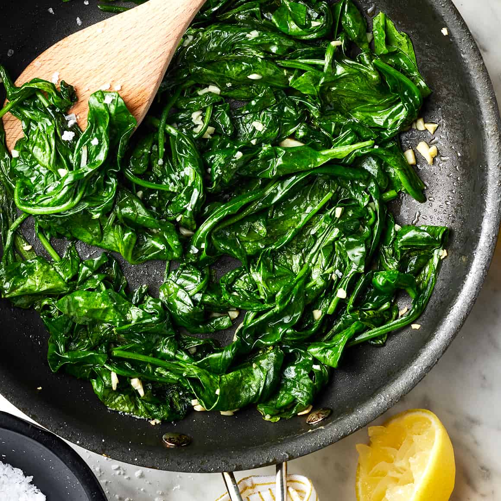

Sautéed Spinach

Sautéed spinach is a healthy and tasty dish.
Ingredients
- 2 teaspoons extra-virgin olive oil
- 1 garlic clove, chopped
- 5 ounces spinach
- ¼ teaspoon sea salt
- Lemon wedge, for squeezing
- ground black pepper>
Steps
- Heat the olive oil in a large skillet over medium heat.
- Add the garlic and cook for 30 seconds, or until fragrant but not at all browned.
- Add the spinach and salt.
- Cook, tossing, for 1 to 2 minutes, or until the spinach is just wilted.
- Remove from the heat and season to taste with lemon juice and freshly ground black pepper.
Recipe via Love & Lemons